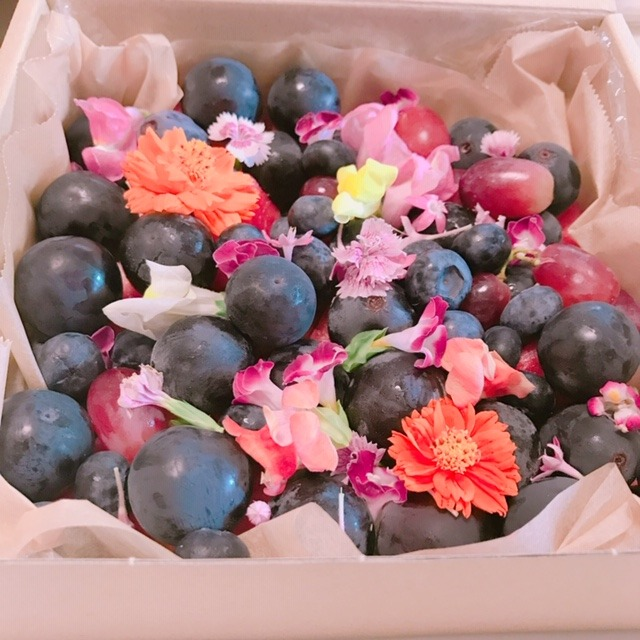
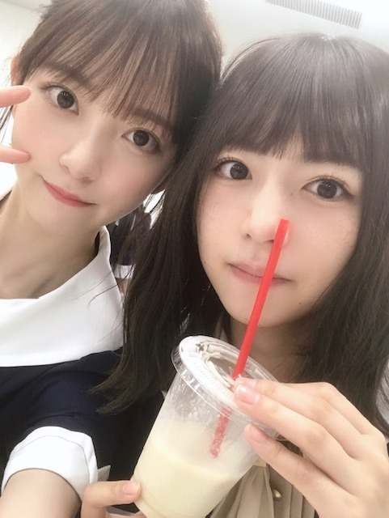
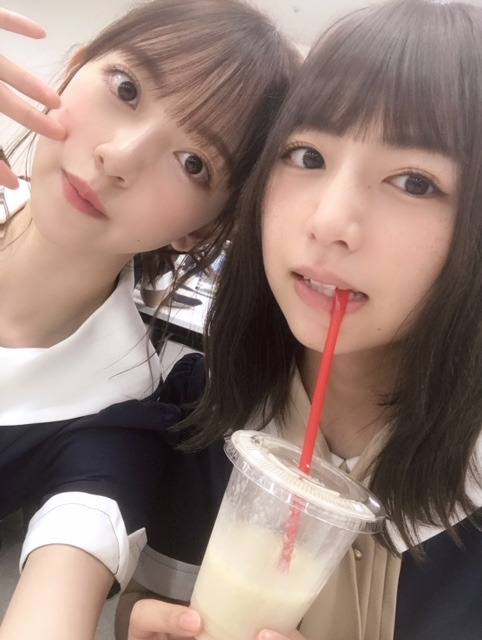

2019/0827Tue甘さが欲しい
やほ~
今日は、
水色のワンピースに水色のバッグで撮影にむかいました
小さいバッグにはお財布、持ち運び用香水、イヤフォン、ヘアブラシ、リップが入ってます☺︎
いただいたフルーツを持って
今日は早くお家に帰ってこれました幸せです
家族で夜ごはんを食べて
今は魔女の宅急便を観ています
何百回観たかわからないけどやっぱりいつ観てもほっこり。落ち着きます
色味も音楽も話の内容もトータルで好き
1番好きなジブリ作品...❤︎

フルーツだいすき人間


ふざけてる時が1番楽しい☺︎
今日は23:58からTBS その他の人に会ってみた
に梅ちゃんと出演します❤︎
是非、見てください
感想お待ちしてます~
では！
2019/08/27 19:24
コメント(281)
甘さがほしいのは、脳が疲れているからです。おつかれさまです。
ブログ更新ありがとう☆〃その他の人に会ってみた観たよ(’-’*)♪その他社長ウケた笑マジでヤバイと思ったのが桃色王国の人Σ(ﾟﾛﾟ;)そして未央奈本当に可愛かった(*>∀<*)もう少しで神宮始まるね‼応援してる☆神宮の最終日行くね(*^-^*)体調気を付けてね(*ゝω･*)本当に大好き☆〃
ほりっぴ～、ナンチです♪
ブログ更新ありがとう～
ようやく帰宅
麻婆茄子を食してます
その他の人が終わってしまった時間なので、明日録画観るね
なので感想はまた明日
間違いないのは、ほりっぴ～&うめちゃんは女神すぎることかな
ブログ更新ありがとう～
ようやく帰宅
麻婆茄子を食してます
その他の人が終わってしまった時間なので、明日録画観るね
なので感想はまた明日
間違いないのは、ほりっぴ～&うめちゃんは女神すぎることかな
こんばんは～。
すごくかわいいバッグだね。みおなちゃんの雰囲気に合ってる気がするよ(^^)
「魔女の宅急便」は面白いよね。俺も２０回ぐらい観たよ。みおなちゃんは何百回なんだ。スゴイね！今週の金曜日には「天空の城ラピュタ」も放送されるよね。俺は「天空の城ラピュタ」はすごく久しぶりだから、ちょっと観てみようかなと思ってるよ。
「その他の人に会ってみた」も見たよ。面白かったよ(^^)みおなちゃんはなんかもうコメンテーターが出来るくらいコメントが上手いね。この調子で頑張って！
じゃあ。
すごくかわいいバッグだね。みおなちゃんの雰囲気に合ってる気がするよ(^^)
「魔女の宅急便」は面白いよね。俺も２０回ぐらい観たよ。みおなちゃんは何百回なんだ。スゴイね！今週の金曜日には「天空の城ラピュタ」も放送されるよね。俺は「天空の城ラピュタ」はすごく久しぶりだから、ちょっと観てみようかなと思ってるよ。
「その他の人に会ってみた」も見たよ。面白かったよ(^^)みおなちゃんはなんかもうコメンテーターが出来るくらいコメントが上手いね。この調子で頑張って！
じゃあ。
未央奈ちゃん、こんばんは(^o^)/
『魔女の宅急便』も好きですが、俺が一番好きなジブリ作品は『天空の城ラピュタ』です( ＾∀＾)
未央奈ちゃんは『ラピュタ』は好きですか？
あとジブリでは無いですが宮崎駿監督作品の『ルパン三世 カリオストロの城』も放送される度に毎回録画して見てます( ＾∀＾)
『魔女の宅急便』も好きですが、俺が一番好きなジブリ作品は『天空の城ラピュタ』です( ＾∀＾)
未央奈ちゃんは『ラピュタ』は好きですか？
あとジブリでは無いですが宮崎駿監督作品の『ルパン三世 カリオストロの城』も放送される度に毎回録画して見てます( ＾∀＾)
ブログ更新ありがとう！！
自分は千と千尋の神隠しが一番好き
サウンドから引き込まれていく感じがしてすごく好きだし、
いろんなことを学んだ映画だから好き
フルーツは大好き 特にいちご 桃 ブルーベリーが好き！
まあ、食べるタイミングが自分へのご褒美で食べるから、好きになったんだと思うけどね…笑笑
もう体調は良くなったのかな？
最近早朝が冷えてきてるから体調には気をつけないとね！
またね
自分は千と千尋の神隠しが一番好き
サウンドから引き込まれていく感じがしてすごく好きだし、
いろんなことを学んだ映画だから好き
フルーツは大好き 特にいちご 桃 ブルーベリーが好き！
まあ、食べるタイミングが自分へのご褒美で食べるから、好きになったんだと思うけどね…笑笑
もう体調は良くなったのかな？
最近早朝が冷えてきてるから体調には気をつけないとね！
またね
未央奈～☆☆
フルーツを持って帰ったんだー
何のフルーツだろうって思いながらブログを読み進めていったら、
フルーツとフラワーの想像以上にオシャレな
盛り合わせの写真が出てきてビックリしたー笑
ジブリにフルーツにお母さんの手料理に
今夜は家でゆっくりと癒やしのひとときを過ごせてよかったね。
その他の人に会ってみた、観たよ～
未央奈、結構リラックスして楽しんでるように見えたよ。
未央奈の笑顔もたくさん見られて嬉しかったー！
フルーツを持って帰ったんだー
何のフルーツだろうって思いながらブログを読み進めていったら、
フルーツとフラワーの想像以上にオシャレな
盛り合わせの写真が出てきてビックリしたー笑
ジブリにフルーツにお母さんの手料理に
今夜は家でゆっくりと癒やしのひとときを過ごせてよかったね。
その他の人に会ってみた、観たよ～
未央奈、結構リラックスして楽しんでるように見えたよ。
未央奈の笑顔もたくさん見られて嬉しかったー！
最近友達とポニョを見ていたらそうすけに似てると言われましたwこれは褒め言葉なのでしょうか？w 久しぶりのジブリだったのですが、やっぱりジブリのご飯は美味しそうですね！ただのお湯でさえ美味しそうに見えるジブリは深夜には見ちゃいけないですねw
ブログ更新ありがとう！
未央奈ちゃん大好き
堀北コンビめっちゃ好きーー！
これからも体調気をつけて頑張ってねー
未央奈ちゃん大好き
堀北コンビめっちゃ好きーー！
これからも体調気をつけて頑張ってねー
大阪やってないみたいでショック！
後日もし放送されたら絶対見ます！
後日もし放送されたら絶対見ます！
フルーツ美味しいよね！
幾らでも食べられるなぁ〜
未央奈ちゃんは、水色が良く似合うね♪
透明感があって爽やかすぎるよ✨
幾らでも食べられるなぁ〜
未央奈ちゃんは、水色が良く似合うね♪
透明感があって爽やかすぎるよ✨
みんなホント可愛い♪
俺は香水を2種類程持ち歩いてるよ！
体調は大丈夫かな？
俺も先日から扁桃炎になったけど
神宮は行けそうだから楽しみにしてる♪
俺は香水を2種類程持ち歩いてるよ！
体調は大丈夫かな？
俺も先日から扁桃炎になったけど
神宮は行けそうだから楽しみにしてる♪
朝からフルーツを食べるとなんだかその日1日頑張ろう！って気持ちが普段より高くなる気がします(о´∀`о)僕だけですかね？
一色の服装を着こなせる女性は本当にオシャレだと思います。流石です(^^)
この前ポニョがテレビでやっていたので映画館で観て以来だったのですが当時の自分は保育園児だったので今みると全く違う映画かと思うほど違う感想が出てきました。映画ってその時の自分の気持ち、環境、年齢だったり色んなもので受け取り方が変わってくるので誰かと感想を共有できると凄い楽しいですよね♪
その他の人に会ってみたは僕の住んでる地域では違う回が放送されていたので気長に待ちますね〜
最近は朝と夜はクーラーがいらないぐらい涼しくなってきたので残りの夏を楽しみたいです。プール行きたかったなぁ〜笑笑
では！！
一色の服装を着こなせる女性は本当にオシャレだと思います。流石です(^^)
この前ポニョがテレビでやっていたので映画館で観て以来だったのですが当時の自分は保育園児だったので今みると全く違う映画かと思うほど違う感想が出てきました。映画ってその時の自分の気持ち、環境、年齢だったり色んなもので受け取り方が変わってくるので誰かと感想を共有できると凄い楽しいですよね♪
その他の人に会ってみたは僕の住んでる地域では違う回が放送されていたので気長に待ちますね〜
最近は朝と夜はクーラーがいらないぐらい涼しくなってきたので残りの夏を楽しみたいです。プール行きたかったなぁ〜笑笑
では！！
水色のバック可愛い！
どこのブランドのか教えて欲しい！
どこのブランドのか教えて欲しい！
堀さん、おはようございます。
水色のワンピースに水色のバッグ。水色づくしでお仕事、すてきですね。水で涼しい気分を味わってきた夏ももうすぐおしまい。名残を惜しみつつ秋を待ちましょう。
最近は金曜ロードショーさんでジブリ作品を続けて放送してくれるので毎週楽しみ。何回も観られることがジブリ作品のすばらしさ。『魔女の宅急便』、また観返したくなりました〜。
ではまたコメントしますね。今日も元気にいきましょう。
さらばだ、また会おう！（気球に乗って去りぬ〜）
水色のワンピースに水色のバッグ。水色づくしでお仕事、すてきですね。水で涼しい気分を味わってきた夏ももうすぐおしまい。名残を惜しみつつ秋を待ちましょう。
最近は金曜ロードショーさんでジブリ作品を続けて放送してくれるので毎週楽しみ。何回も観られることがジブリ作品のすばらしさ。『魔女の宅急便』、また観返したくなりました〜。
ではまたコメントしますね。今日も元気にいきましょう。
さらばだ、また会おう！（気球に乗って去りぬ〜）
きぃちゃんとのツーショット最高です

この前のブログにKIEHLSについて書いてましたよね？
姉にプレゼントを買おうと思ってふと立ち寄ったお店がKIEHLSでした！でも、私はブランドとかの知識が無くて、KIEHLSの名前を聞くのも初めてに近かったので少し不安があったんですが、未央奈ちゃんが愛用していると知って、買って良かったと安心しました
という報告でした笑笑
それではまたね〜
この前のブログにKIEHLSについて書いてましたよね？
姉にプレゼントを買おうと思ってふと立ち寄ったお店がKIEHLSでした！でも、私はブランドとかの知識が無くて、KIEHLSの名前を聞くのも初めてに近かったので少し不安があったんですが、未央奈ちゃんが愛用していると知って、買って良かったと安心しました
という報告でした笑笑
それではまたね〜
ブログ更新ありがとう
フルーツ美味しそう
 ゆうか
ゆうか
フルーツ美味しそう
チャァオ～～!☆彡
プリンプリンの～～～⤴️⤴️
可愛いぃ～～プリンセスみおちゃん、こんばんは～～～⤴️⤴️❕❤️❤️❤️❤️❤️笑顔
拝見しました❕❤️❤️❤️❤️❤️笑顔
23:58からのTBS「その他の人に会ってみた」を～～⤴️⤴️❕❤️❤️❤️❤️❤️笑顔
一言で言って、すごいですねぇ～～⤴️⤴️❕❤️❤️❤️❤️❤️笑顔
日本の社会もだんだん女性の進出が多くなってきて、嬉しい～です❕❤️❤️❤️❤️❤️笑顔
でも、全国のシングルマザーが106万人とは相当驚きました❕❤️❤️❤️❤️❤️笑顔
私の周りの知人の多くも～、離婚経験が有りますけど～～⤴️⤴️
知る限り、皆再婚して幸せみたいですから～～⤴️⤴️
その106万人の数字には本当に驚きました❕笑顔
おいらなら、結婚したら絶対手離さないで大切にします❕❤️❤️❤️❤️❤️笑顔
今の世の中それだけ、人への労り、相手様の辛さを想像する想いの力が乏しくなったのではないでしょうかぁ～～～❕❔笑顔
人それぞれ自分自身がやってきた仕事量や仕事の内容や豊かさを
己れ自身で過剰評価をして、それを勝手に自分自身を基準とする「ものさし」を持ち
人様の「社会の評価、私生活の評価」にあてはめて、いるのではないのでしょうかぁ～～～⤴️⤴️❕❔笑顔
そしてそれが自惚れ、薄情な気持ちに生まれ
温かみのない社会になってきたのではないでしょうかぁ❕❔笑顔
もう少し人様への想いがあれば、もっといい世の中になるのではないのでしょうかぁ❕❔笑顔
ですが、現実はなかなか難しい～ですねぇ❕笑顔
みおちゃん❕・・・・
今回この番組を見て
世の中の現状を知ることがまたできました❕❤️❤️❤️❤️❤️笑顔
番組告知、ありがとうございます❕❤️❤️❤️❤️❤️笑顔
それでは、みおちゃんまたねぇ❕❤️❤️❤️❤️❤️笑顔
☆会津＊ONEより☆彡
未央奈、ブログ更新ありがとう!
毎日、ブログ楽しみにしてます
毎日、ブログ楽しみにしてます
ブログ更新 お疲れ様！！ (^_^)v
ほんと 堀ちゃんも成長し 大人の女性に成ったね！！ (^_-)-☆
♪バレッタ センターに突然選ばれて←外野の椅子から突然ステージへ！！
堀ちゃんの信じられないと言う 驚きの表情が僕の脳裏に焼き付いています。
━━━━━━━━━━━━━━━━━━━━
フルーツ ふるいと←fruitを単語を覚えるもの言い は、
キューイ、ブドウ、みかんを食べます！！ (^。^)y-.。o○
一番の抵抗が在るのが リンゴ 歯の都合で 丸かじりは 不可(>_<)
どうしても 食べたい時は 卸し金で すって食べます！！
でも、すぐリンゴが変色するので、少し塩saltを入れる(^^♪
━━━━━━━━━━━━━━━━━━━━
魔女の宅急便ですか！！
僕は 正義の味方が必ず勝つ 時代劇←昔放送された 観てます！！
あと アメリカの刑事ものを BS ディーライフで。
※だいたいが 録画予約。
体をいたわり、健康で行こう！！ ばいばい (^.^)/~~~
ほんと 堀ちゃんも成長し 大人の女性に成ったね！！ (^_-)-☆
♪バレッタ センターに突然選ばれて←外野の椅子から突然ステージへ！！
堀ちゃんの信じられないと言う 驚きの表情が僕の脳裏に焼き付いています。
━━━━━━━━━━━━━━━━━━━━
フルーツ ふるいと←fruitを単語を覚えるもの言い は、
キューイ、ブドウ、みかんを食べます！！ (^。^)y-.。o○
一番の抵抗が在るのが リンゴ 歯の都合で 丸かじりは 不可(>_<)
どうしても 食べたい時は 卸し金で すって食べます！！
でも、すぐリンゴが変色するので、少し塩saltを入れる(^^♪
━━━━━━━━━━━━━━━━━━━━
魔女の宅急便ですか！！
僕は 正義の味方が必ず勝つ 時代劇←昔放送された 観てます！！
あと アメリカの刑事ものを BS ディーライフで。
※だいたいが 録画予約。
体をいたわり、健康で行こう！！ ばいばい (^.^)/~~~
未央奈ちゃんおはようございます‼ありがとうございます！今日もお仕事頑張って下さい！頑張ります‼ありがとうございます！頑張ります‼今日もお仕事頑張って下さい！
未央奈ちゃん、おはようございます。
小気味良いブログの更新ありがとう。嬉しいです。
未央奈ちゃんが好きなブルーだね、ワンピース姿も見たいなぁ～
堀北コンビは安定の可愛さだけど、梅未央も新鮮で綺麗ですね。
昨夜のその人は録画してあるから、今日見ます。
今夜はレコメン、４期生と一緒だから、お姉さん未央奈かな？楽しみにしてます。
乃木坂46と頑張ってるcuteでsmartな未央奈ちゃんを応援しています。
小気味良いブログの更新ありがとう。嬉しいです。
未央奈ちゃんが好きなブルーだね、ワンピース姿も見たいなぁ～
堀北コンビは安定の可愛さだけど、梅未央も新鮮で綺麗ですね。
昨夜のその人は録画してあるから、今日見ます。
今夜はレコメン、４期生と一緒だから、お姉さん未央奈かな？楽しみにしてます。
乃木坂46と頑張ってるcuteでsmartな未央奈ちゃんを応援しています。
更新ありがとう！
未央奈ちゃん更新ありがとー！
バック可愛い！良きですね！
未央奈ちゃんってほんとおしゃれだね！
フルーツ自分も大好き！
毎日何かしら食べるようにしてます。
昨日は いちじくを食べたよー。
あとね、話変わるけど
夢に未央奈ちゃんが出てきた！
事務所に出演料払わなくちゃ。笑
堀北コンビ最高(≧∀≦)
ではでは
今日も素敵な１日を。
バック可愛い！良きですね！
未央奈ちゃんってほんとおしゃれだね！
フルーツ自分も大好き！
毎日何かしら食べるようにしてます。
昨日は いちじくを食べたよー。
あとね、話変わるけど
夢に未央奈ちゃんが出てきた！
事務所に出演料払わなくちゃ。笑
堀北コンビ最高(≧∀≦)
ではでは
今日も素敵な１日を。
未央奈ー
体調は良くなりましたか❓
仕事大変だけど無理をせずにね
きーちゃんと2人で良い顔
体調は良くなりましたか❓
仕事大変だけど無理をせずにね
きーちゃんと2人で良い顔
ブログ更新、ありがとー！
テレビ、見ましたー！
反抗期、私も無かったな笑
推しメン見たさにテレビつけたけど、
それぞれの世界でシングルマザーで奮闘する姿も知れて、
とても良かったし、ダブルで元気もらえた！
告知してくれてありがとー！
テレビ、見ましたー！
反抗期、私も無かったな笑
推しメン見たさにテレビつけたけど、
それぞれの世界でシングルマザーで奮闘する姿も知れて、
とても良かったし、ダブルで元気もらえた！
告知してくれてありがとー！
未央奈ちゃん、ブログ更新ありがとうございます！
素敵なバッグですね！
服と合わせた感じも観たかったです笑
僕は、ジブリ作品を数作品しか観たことないのですよね。
魔女の宅急便も、未央奈ちゃんのモノマネを観ても似てるとはならなかったので、たぶん観たことないのですよね。
未央奈ちゃんが1番好きとのことなので、観てみたいなと思います！
フルーツいいですよね！
僕も大好きです！！
でも、一人暮らししてるとなかなか食べられないのですよね…
実家にいるときは、ほぼ毎日何かしらのフルーツを食べていたのですが…
そう考えると、やはり実家はいいなぁと思ってしまいます笑
まぁ、単純に家族とたくさん話せるというだけでも、すごく実家はいいなぁと思いますが笑
日奈子ちゃんとの写真、ありがとうございます！
堀北コンビ、最高です！！
未央奈ちゃん、大好きです
素敵なバッグですね！
服と合わせた感じも観たかったです笑
僕は、ジブリ作品を数作品しか観たことないのですよね。
魔女の宅急便も、未央奈ちゃんのモノマネを観ても似てるとはならなかったので、たぶん観たことないのですよね。
未央奈ちゃんが1番好きとのことなので、観てみたいなと思います！
フルーツいいですよね！
僕も大好きです！！
でも、一人暮らししてるとなかなか食べられないのですよね…
実家にいるときは、ほぼ毎日何かしらのフルーツを食べていたのですが…
そう考えると、やはり実家はいいなぁと思ってしまいます笑
まぁ、単純に家族とたくさん話せるというだけでも、すごく実家はいいなぁと思いますが笑
日奈子ちゃんとの写真、ありがとうございます！
堀北コンビ、最高です！！
未央奈ちゃん、大好きです
未央奈、今日も一日お疲れさまでした。
水色のものを選ぶの多くなったねー
爽やかな印象があっていいなって思います！
ファッションや小物までこだわる未央奈は女の子を存分に楽しんでいるところがいいですね。
そういえば、BRODYが発売されますね！
みり愛さんとの動画も見ました。
神宮ライブのことについて語ってくれた内容も楽しみです。早く読みたいです。。。
じゃあ、今回は短めに。
体調管理には気をつけて、神宮ライブ3日間を楽しんでいけるように。。心より祈ってます。
ではでは、ねこでした。
未央奈も梅ちゃんも、ピース可愛い！！
海ちゃん、だいぶ膝曲げてるんだろな？？(笑)
海ちゃん、だいぶ膝曲げてるんだろな？？(笑)
やほ~
おはよ〜☺︎
おれもフルーツ大好き人間です！！
この前ぶどう食べたばっかりやよ
ちなみにですが、今は桃を食べてた！
ほんとに好きなの。笑
なくなっちゃうとき切ないね。笑
フルーツの箱、オシャレだね！ そのまま作品みたいだ。
未央奈と朝、一緒にフルーツを食べたいなぁ
未央奈と好きなもの結構近くて嬉しいのれす！ ドラマとか音楽とか共感できることが多くて嬉しい☺︎
甘えられたいなぁ
感想書きたかったけど昨日番組表みたら、どうやらこっちではまだ未央奈の出演回じゃないみたい(T ^ T)
何週遅れでやるんやろ？
楽しみにしとったのに。。。
感想書けずすまぬ。
バッグもバッグの撮り方も洒落てるぅ
またね！
おはよ〜☺︎
おれもフルーツ大好き人間です！！
この前ぶどう食べたばっかりやよ
ちなみにですが、今は桃を食べてた！
ほんとに好きなの。笑
なくなっちゃうとき切ないね。笑
フルーツの箱、オシャレだね！ そのまま作品みたいだ。
未央奈と朝、一緒にフルーツを食べたいなぁ
未央奈と好きなもの結構近くて嬉しいのれす！ ドラマとか音楽とか共感できることが多くて嬉しい☺︎
甘えられたいなぁ
感想書きたかったけど昨日番組表みたら、どうやらこっちではまだ未央奈の出演回じゃないみたい(T ^ T)
何週遅れでやるんやろ？
楽しみにしとったのに。。。
感想書けずすまぬ。
バッグもバッグの撮り方も洒落てるぅ
またね！
録画したよ
見れてない
見れてない
おぱよう。セブンだよ(ฅ'ω'ฅ)♪
もうすぐライブだねー
やっぱり雨予報だけど
もはや乃木坂のライブは雨も楽しむ気で行かなきゃですね 笑
レインコートも買って準備万端！
ラスト神宮楽しもうね(≧∀≦)
では、今日も1日楽しもうd(@^∇ﾟ)/ﾌｧｲﾄｯ♪
o(ﾟ▽＾)ﾉｼまたねぃ♪
もうすぐライブだねー
やっぱり雨予報だけど
もはや乃木坂のライブは雨も楽しむ気で行かなきゃですね 笑
レインコートも買って準備万端！
ラスト神宮楽しもうね(≧∀≦)
では、今日も1日楽しもうd(@^∇ﾟ)/ﾌｧｲﾄｯ♪
o(ﾟ▽＾)ﾉｼまたねぃ♪
みおちゃん！水色のバックおしゃれだなぁ！！水色似合う！！みおちゃんのブログおしゃれで見てて楽しい！ ブルーベリーかな？美味しそう！堀北コンビ好きー！！乃木坂の4期生祭りで、みんなが堀ちゃんのこと憧れで大好きって言ってて、私も嬉しかったなぁ笑笑 今日は堀ちゃんのレコメンだから楽しみだなぁ！！755も引用ありがとう！めちゃ嬉しかった笑笑
ももんが
ももんが
堀ちゃん、神宮楽しみにしてるよ、頑張ってね。
梅ちゃんとのテレビ楽しみ～(*^^*)
魔女宅で何百回もほっと一息している頃には、
こっちはゼロ・ダーク・サーティとノーカントリーを見直して真に迫る緊張感にやられてました・・・。アントン・シガーは映画史上に残る悪役。それでは今週後半も頑張って下さい！！！
こっちはゼロ・ダーク・サーティとノーカントリーを見直して真に迫る緊張感にやられてました・・・。アントン・シガーは映画史上に残る悪役。それでは今週後半も頑張って下さい！！！
未央奈が色んなことが気になるようにファンも色々気になるんだと思います
次から気をつければいいだけだと思います
次から気をつければいいだけだと思います
未央奈ちゃんこんにちは‼ありがとうございます‼頑張ります‼ありがとうございます‼頑張ります‼今日から頑張ります‼
やほ～♡
甘さも大事です～✨
水色ってとっても癒されますよねー！
フルーツの写真にも癒されましたよ♪
堀北コンビにもほっこりしましたー！
梅ちゃんはお姉さんに見えますね～笑
その他の人に会ってみた観ましたよー！
とってもリアリティーな内容でしたね☆
自分はお金に困らず育ってしまったから、
一人暮らしを始めてから困りましたよ～笑
みおちゃんにはしっかりした人が合うし、
梅ちゃんもとても素敵だと思いました～笑
梅ちゃんの赤ワンピ姿も可愛いかったし、
みおちゃんの紺ワンピ姿は大人っぽいな♡
今日のレコメン！リアタイで楽しみです～☺
甘さも大事です～✨
水色ってとっても癒されますよねー！
フルーツの写真にも癒されましたよ♪
堀北コンビにもほっこりしましたー！
梅ちゃんはお姉さんに見えますね～笑
その他の人に会ってみた観ましたよー！
とってもリアリティーな内容でしたね☆
自分はお金に困らず育ってしまったから、
一人暮らしを始めてから困りましたよ～笑
みおちゃんにはしっかりした人が合うし、
梅ちゃんもとても素敵だと思いました～笑
梅ちゃんの赤ワンピ姿も可愛いかったし、
みおちゃんの紺ワンピ姿は大人っぽいな♡
今日のレコメン！リアタイで楽しみです～☺
未央奈ちゃんこんばんは‼ありがとうございます！今日もレコメン頑張って下さい！頑張ります‼ありがとうございます‼
更新有難う！
御疲れ様でした！
何時も頑張って下さい、
常に必ずしても応援しています。
どうか御身体に気を付けて下さい！
ずっと大好き！
御疲れ様でした！
何時も頑張って下さい、
常に必ずしても応援しています。
どうか御身体に気を付けて下さい！
ずっと大好き！
Hay未央奈(･∀･∩)
俺は素直に答えると、結婚してラブラブしたい。笑
根がラブラブマンだから(￣ー￣)。笑
理想はアイアンマン2時代のスカーレット・ヨハンソンみたいな人がいいな。笑(未央奈:無理でしょ！←)
部屋の片付け5割は終わったが、まだ後５割はあるんだが..捨て方がわからないゴミもあるから、調べるしかない..
しゃーない片付けは来年頑張るか＼(^o^)／不動産屋も来年行くぞい＼(^o^)／(早く頑張りなさい！←)
がんばみおなー
俺は素直に答えると、結婚してラブラブしたい。笑
根がラブラブマンだから(￣ー￣)。笑
理想はアイアンマン2時代のスカーレット・ヨハンソンみたいな人がいいな。笑(未央奈:無理でしょ！←)
部屋の片付け5割は終わったが、まだ後５割はあるんだが..捨て方がわからないゴミもあるから、調べるしかない..
しゃーない片付けは来年頑張るか＼(^o^)／不動産屋も来年行くぞい＼(^o^)／(早く頑張りなさい！←)
がんばみおなー
甘さは俺も欲しいよ、世知辛い世の中だからね…（苦笑）
by：翔んで9メートル
by：翔んで9メートル
堀さん、こんばんは♪
日奈子ちゃんとの写真が好きです。
いいきっかけなので日奈子ちゃんの
ブログをこの後見てみますね。
その他の人に会ってみた は
さっき、新聞で調べたら僕の地域では
放送されてないそうです。
最近、崖の上のポニョ という映画を
テレビで見ました。
ポニョという魚の子が海の上を
走って車を追いかけているシーンを楽しみました。
千と千尋の神隠し も見ました。
最初の方で、お父さんとお母さんが
食事していたら動物に姿が変わりました。
お風呂のシーンなども見ました。
ではまたコメントしますね☆
日奈子ちゃんとの写真が好きです。
いいきっかけなので日奈子ちゃんの
ブログをこの後見てみますね。
その他の人に会ってみた は
さっき、新聞で調べたら僕の地域では
放送されてないそうです。
最近、崖の上のポニョ という映画を
テレビで見ました。
ポニョという魚の子が海の上を
走って車を追いかけているシーンを楽しみました。
千と千尋の神隠し も見ました。
最初の方で、お父さんとお母さんが
食事していたら動物に姿が変わりました。
お風呂のシーンなども見ました。
ではまたコメントしますね☆
ブログ更新ありがとう！
未央奈ちゃんが載せる写真オシャレで可愛くて、紹介しているグッズ全部欲しくなっちゃいます…笑
お家でまったりエピソードも堀北コンビのツーショットも最高に癒されます⸜(*ˊᵕˋ*)⸝
その他の人に会ってみた！で未央奈ちゃん沢山喋っていて最高でした！「経済力は必要だと思う」発言めちゃ笑いました！笑
コロコロ変わる表情が可愛くて、ずっとワイプを見ていました︎☺︎♡
未央奈ちゃんが載せる写真オシャレで可愛くて、紹介しているグッズ全部欲しくなっちゃいます…笑
お家でまったりエピソードも堀北コンビのツーショットも最高に癒されます⸜(*ˊᵕˋ*)⸝
その他の人に会ってみた！で未央奈ちゃん沢山喋っていて最高でした！「経済力は必要だと思う」発言めちゃ笑いました！笑
コロコロ変わる表情が可愛くて、ずっとワイプを見ていました︎☺︎♡
きーちゃんとのツーショットありがとう！
未央奈大好き
未央奈大好き
みおな
今日もお疲れ様です
水色のバッグ淡いブルーでいい色ですね
シンクロニシティの衣装と色が似てますね
堀北コンビ久々に見ました
好きなコンビ2位です
北野ちゃん可愛いけど、みおなの方が可愛い笑
乃木坂は全員可愛いけど、1人選ぶなら迷いなくみおなを選べます（口だけで説得力ないけど本当の本当です笑）
ちなみに好きなコンビ1位は、あしゅみおなです
2人目を選んでいいならあすかも気になるけど、みおなが一番です（というか2人も選んじゃダメだよね笑）
これからもたくさんメンバーと絡んで下さい
体調は大丈夫ですか？
明後日から神宮ライブですね
天気はかなり怪しいけど、せめて曇りになる事を願ってます
2日目に行くので、楽しみにしてます
全力で盛り上がりましょう！
レコメン聴きます
ありがとうございました
今日もお疲れ様です
水色のバッグ淡いブルーでいい色ですね
シンクロニシティの衣装と色が似てますね
堀北コンビ久々に見ました
好きなコンビ2位です
北野ちゃん可愛いけど、みおなの方が可愛い笑
乃木坂は全員可愛いけど、1人選ぶなら迷いなくみおなを選べます（口だけで説得力ないけど本当の本当です笑）
ちなみに好きなコンビ1位は、あしゅみおなです
2人目を選んでいいならあすかも気になるけど、みおなが一番です（というか2人も選んじゃダメだよね笑）
これからもたくさんメンバーと絡んで下さい
体調は大丈夫ですか？
明後日から神宮ライブですね
天気はかなり怪しいけど、せめて曇りになる事を願ってます
2日目に行くので、楽しみにしてます
全力で盛り上がりましょう！
レコメン聴きます
ありがとうございました
みおなちゃん更新ありがとう╰(*´︶`*)╯♡
水色良きですね(*´꒳`*)
フルーツも美味しそう（╹◡╹）♡
きいちゃん、みなみんとの写真もありがとう(*´-`)
その他の人に会ってみた見るね〜
モバメもありがとう！
色んな事を言ってくる人がいるやろうけど負けずに頑張って٩(๑❛ᴗ❛๑)۶
みおなちゃんの味方はたくさんいるからね
もうすぐで神宮ライブだねー
チケットは1日も取れなかった（；＿；）
最終日のライブビューイングが当選したから映画館で見守ってるね（╹◡╹）♡
れいかちゃんとの最後のライブ楽しんでね
水色良きですね(*´꒳`*)
フルーツも美味しそう（╹◡╹）♡
きいちゃん、みなみんとの写真もありがとう(*´-`)
その他の人に会ってみた見るね〜
モバメもありがとう！
色んな事を言ってくる人がいるやろうけど負けずに頑張って٩(๑❛ᴗ❛๑)۶
みおなちゃんの味方はたくさんいるからね
もうすぐで神宮ライブだねー
チケットは1日も取れなかった（；＿；）
最終日のライブビューイングが当選したから映画館で見守ってるね（╹◡╹）♡
れいかちゃんとの最後のライブ楽しんでね
未央奈ちゃんお疲れ様です。また、のりさんがレコメンの特番で、遥香ちゃんに未央奈ちゃんのこと変なこと言ってたよ。遥香ちゃんは未央奈ちゃんといつか二人でお出かけしたいみたいから、誘ってあげてね。このあとのレコメン 楽しみ。いつもは仕事中で、生放送は休憩中に途中から聞けないけど、(次の日、YouTubeで未央奈ちゃん出演部分は聞いています。)今日は、休みなので、最初から聴けて嬉しい。レコメンあてにも、メールしますね(読まれたことないけどね、ラジオネームはこことは違う名前です)大好きやおー


あと、お金が欲しい。
そして、彼女が欲しい。